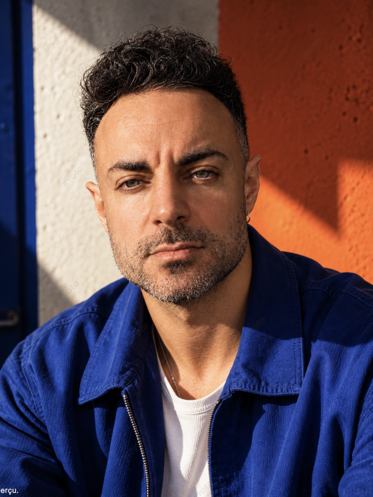

Réputation
Devenir tellement bon et différenciant que les recommandations deviennent un vrai système d'acquisition.
→Tu voulais être photographe. Créer des images. Et surtout : être libre.
Mais aujourd'hui, en plus de photographier, tu dois vendre, communiquer, prospecter, gérer tes clients, faire ta compta... Et quand tu ne travailles pas, ton chiffre d'affaires s'arrête avec toi.
Focus Liberté t'aide à construire des actifs qui continuent à travailler pour ton business, même quand tu ne taffes pas.
Voir comment ça marche →
Le problème, c'est qu'en devenant indépendant, tu n'as pas seulement récupéré ton métier. Tu as récupéré tous les métiers autour.
Alors qu'à la base, tu voulais juste vivre de ta passion...
Tu peux augmenter tes tarifs. Trouver davantage de clients. Remplir davantage ton agenda. Mais il y a une limite que tu ne peux pas négocier : ton temps sur cette terre.
Parce que si chaque euro supplémentaire nécessite une heure supplémentaire de ta part, tu finiras forcément par choisir entre :
Et c'est précisément là que beaucoup de photographes se retrouvent coincés.
Une prestation se termine.
Un actif travaille pour toi même quand tu as finis de bosser dessus.
Devenir tellement bon et différenciant que les recommandations deviennent un vrai système d'acquisition.
→Créer des relations qui peuvent t'apporter des opportunités.
→Aller directement chercher les bonnes personnes, au lieu d'attendre qu'elles arrivent.
→Créer des contenus qui te ressemblent et travaillent après leur publication.
→Construire une audience que tu peux contacter directement et avec laquelle créer une vraie relation.
→Transformer ton expertise en quelque chose que tu peux vendre plusieurs fois.
→Monétiser ton expertise, ton audience ou tes contenus autrement que par la prestation.
→D'un business qui dépend de tes heures à un business qui s'appuie sur des actifs.
Comprendre avant de construire.
Avant de toucher à quoi que ce soit, on met ton business à plat. Je te livre un diagnostic approfondi. Puis on se retrouve pour une première session individuelle.
L'objectif : comprendre exactement où tu en es et où se trouvent tes leviers les plus puissants.
Trouver ton levier.
À partir du diagnostic, je construis avec toi le plan des 11 semaines suivantes. Pas de programme générique. Pas une checklist téléchargée sur Internet. Un plan construit à partir de ton business. On choisit les actifs sur lesquels travailler et l'ordre dans lequel les construire.
Passer de l'idée à l'actif.
Chaque semaine, on avance sur un chantier concret : un objectif, une action, un livrable. L'objectif n'est pas d'accumuler des idées. À la fin des 12 semaines, des choses existent réellement. Un produit, une newsletter, un partenariat, une bibliothèque de contenus ou un système de vente. Ce qui compte, c'est d'avoir un actif qui fonctionne et qui a du sens pour toi.
Faire travailler tes actifs.
Créer quelque chose ne suffit pas. Il faut le mettre en circulation, le tester, le mesurer, le corriger, l'optimiser. Et, quand c'est pertinent, automatiser ou déléguer ce qui peut l'être. Parce qu'un actif qui dort dans un dossier Google Drive ne travaille pas pour toi.
Chaque semaine, on fait le point, on décide de la suite et on débloque les problèmes importants.
Un doute, une décision, un problème technique ou une opportunité : tu m'écris. L'objectif, c'est de t'accompagner pendant que tu construis.
Avant de t'accompagner, j'ai passé des années à construire les miens. J'étais photographe. Je vendais mes heures. Puis le Covid est arrivé : mes mariages et événements corporate se sont annulés, mon chiffre d'affaires s'est effondré.
Si je ne peux plus vendre mes heures, qu'est-ce que je peux construire à la place ? La suite, c'est ce que j'appelle aujourd'hui Focus Liberté.
Som Picture
Som Picture
Une audience que je peux contacter directement.
E-book, presets, formations, coaching, workshops.
Des partenariats avec de nombreuses marques du secteur.
E-book, 2 packs de presets, 3 formations en ligne et d'autres offres.
Mon expérience personnelle, pas une promesse.
Et de nombreuses autres marques du secteur photographique.
Imagen et d'autres partenaires.
Je n'ai pas arrêté de travailler. J'ai travaillé, testé, créé, parfois fait des erreurs. Mais progressivement, j'ai arrêté de construire uniquement des choses qui me rapportaient de l'argent quand j'étais en train de travailler dessus. J'ai commencé à construire des choses qui pouvaient continuer à produire de la valeur après mon travail. Un de mes produits se vend encore 6 ans après l'avoir créé. Certaines vidéos YouTube me rapportent encore de l'affiliation 4 ans plus tard. C'est toute la différence.
La liberté se construit. Elle ne se commande pas sur Amazon.
Pendant 12 semaines, je travaille directement avec toi pour identifier, construire et activer les leviers qui peuvent permettre à ton business de moins dépendre de tes heures.
Un accompagnement suffisamment long pour ne pas rester au stade des idées.
Une session par semaine pour avancer, décider et débloquer.
Une analyse approfondie de ton business avant de décider quoi construire.
Une roadmap adaptée à ta situation et à tes objectifs.
Pour éviter qu'un problème rencontré mardi bloque toute ta semaine jusqu'à la session suivante.
On ne se contente pas de parler de stratégie. On construit.
1 000 €
/ mois
3 mois minimum.
Soit 3 000 € pour les 12 semaines d'accompagnement.
Tu n'as pas besoin de travailler 60 heures. Tu n'as pas besoin de devenir influenceur. Tu n'as pas besoin de faire des millions de vues. Tu n'as pas besoin de devenir quelqu'un d'autre.
Mais tu dois commencer à construire. Des actifs. Des systèmes. Des leviers. Des choses qui continuent à créer de la valeur même quand tu n'es pas devant ton ordinateur.
On commence par regarder ce que tu as déjà. Pas par tout casser.